Abbildung ähnlich – zeigt den Produkttyp.
Personen-/Materialschleuse 2-Kammer (Containerbauweise)
Starre, modulare 2-Kammer-Schleuse in Container- bzw. Paneelbauweise für den kontrollierten Übergang zwischen Schwarz- und Weißbereich.
Die 2-Kammer-Schleuse in starrer Modul- bzw. Containerbauweise trennt Schwarz- und Weißbereich: Personal oder Material durchläuft nacheinander zwei Kammern, sodass der Unterdruck im Arbeitsbereich erhalten bleibt. Glatte, wasserfeste und leicht zu dekontaminierende Oberflächen, ein tragfähiger Stahlrahmen und Wärmedämmung machen den Aufbau auch im Winter praxistauglich. Anders als Faltschleusen bleibt die starre Variante über viele Einsätze formstabil, wird aber als Modul auf Palette bzw. Lkw transportiert.
Technische Daten
| Kammern | 2 (Schwarz- und Weißseite; Personen- und/oder Materialdurchgang) |
|---|---|
| Wände/Dämmung | Wärmegedämmt, wasser- und feuchtigkeitsbeständig; glatte, wischbare Innenflächen als Pflichtanforderung |
| Türen/Zuluft | Flügeltüren mit Sichtfenster und Belüftung bzw.; Zuluftklappen |
| Wasser/Dusche (optional) | Personenschleuse mit Dusche nach TRGS 519 |
| Zolltarifnummer (HS) | 94062000 |
EU-Normen und Vorschriften
TRGS 519Asbest: Abbruch-, Sanierungs- oder Instandhaltungsarbeiten (Schleusen, Schwarz-/Weißbereich)DGUV Regel 101-004Kontaminierte BereicheDIN VDE 0100-701 / -704Errichten von Niederspannungsanlagen: Räume mit Dusche; BaustellenEN 13501-1Brandverhalten von Bauprodukten (Wand- und Dämmmaterial)
Passt dazu
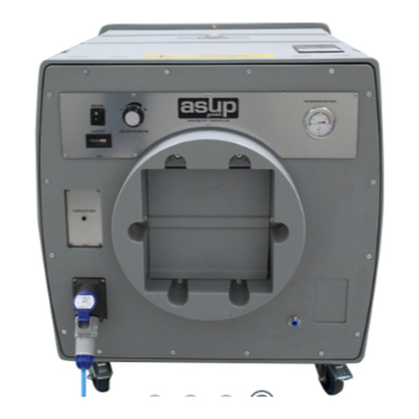
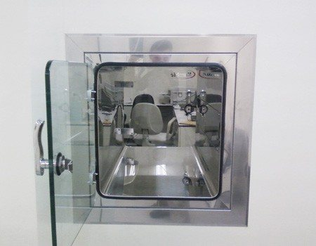

Weitere Produkte dieser Kategorie

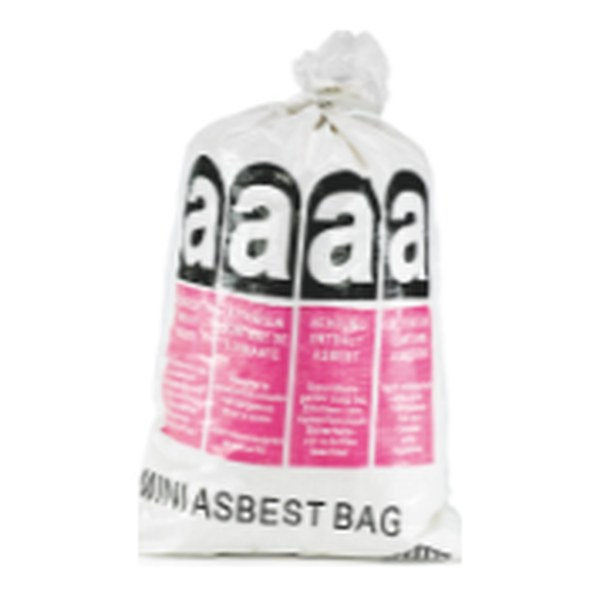
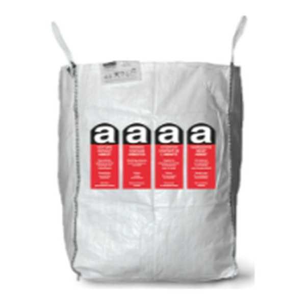
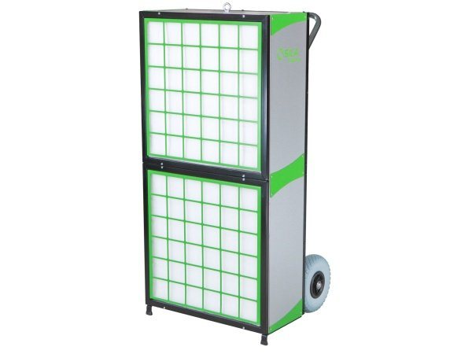
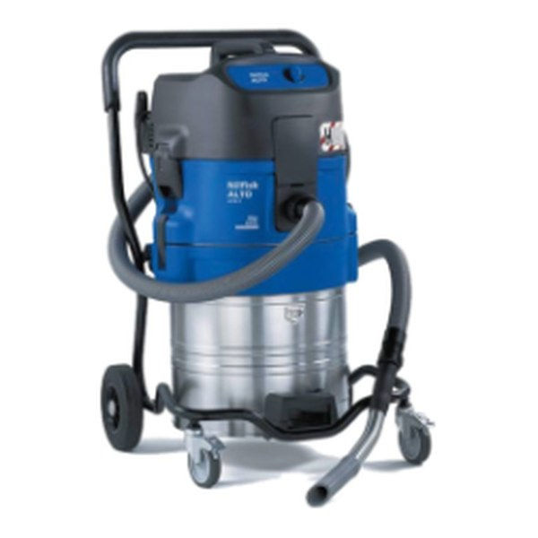

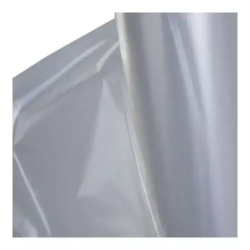
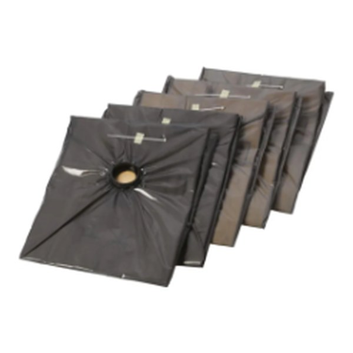
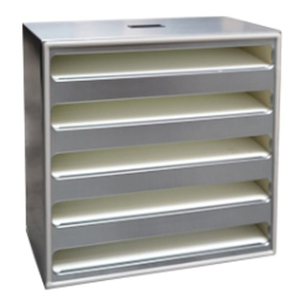
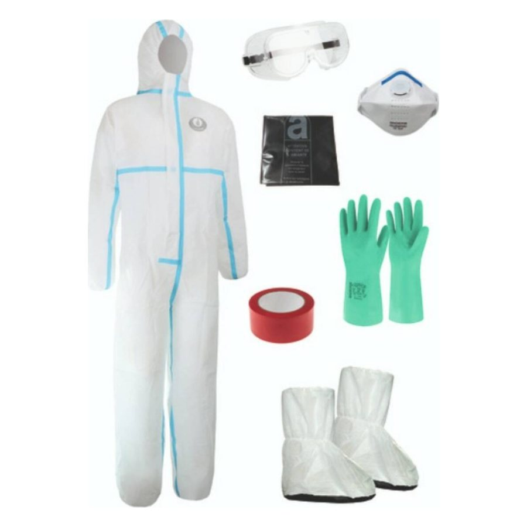
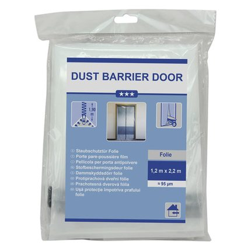

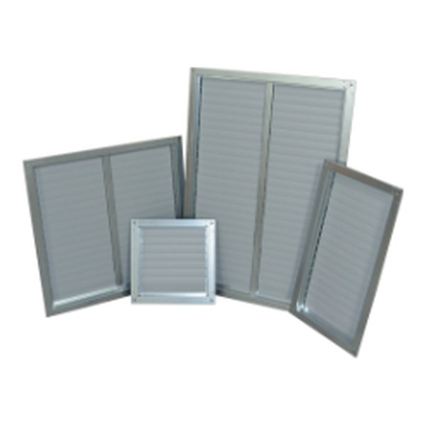


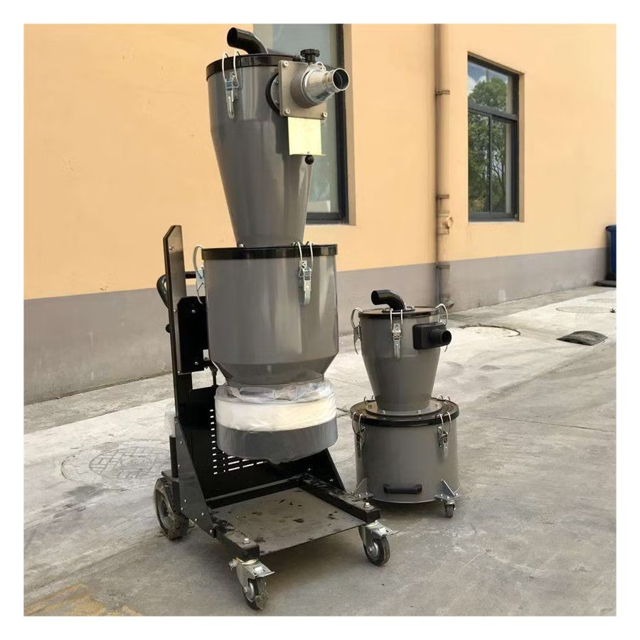


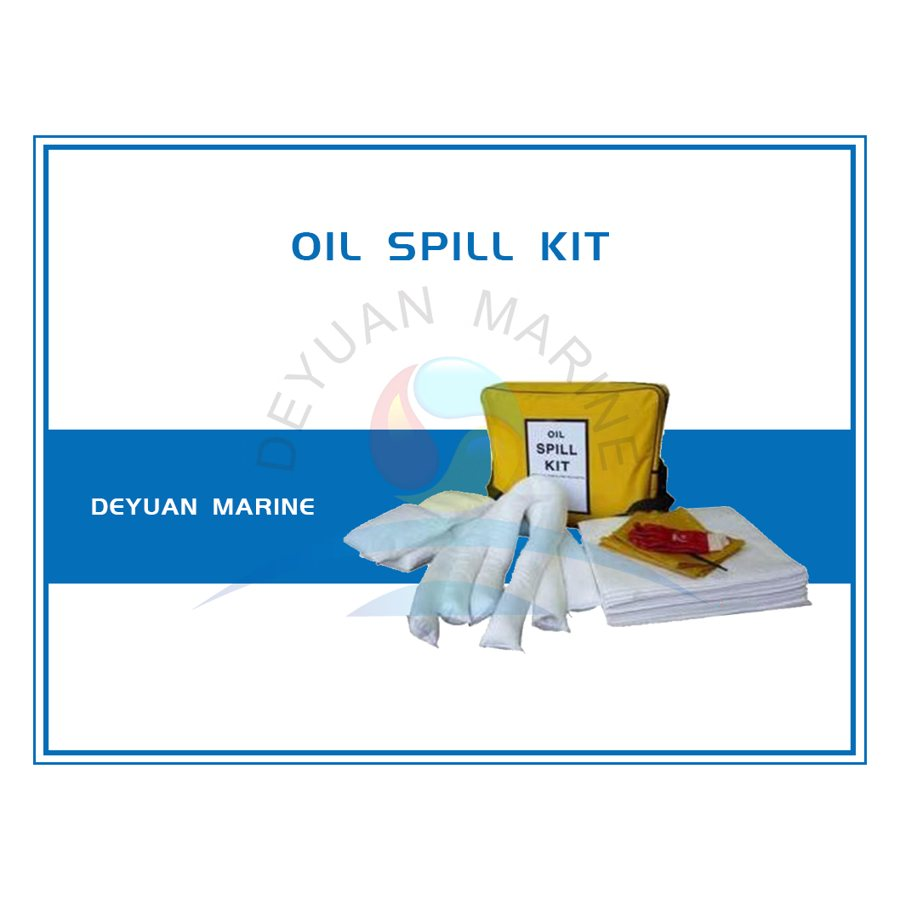